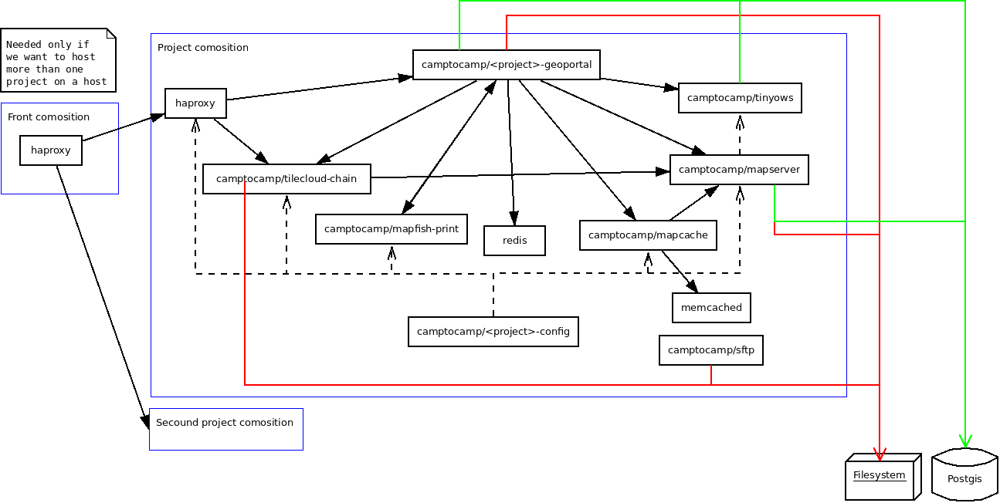

Use Docker to deploy your application¶
Architecture schema¶
Configure your project¶
Edit the <package>.mk file and add those lines:
DOCKER = TRUE
DOCKER_BASE = camptocamp/<project_name>
JASPERREPORTS_VERSION = 6.1.1
After that, a make --makefile=<xxx.mk> build will create Docker images named like
that:
- camptocamp/<project_name>_wsgi:latest
- camptocamp/<project_name>_mapserver:latest
- camptocamp/<project_name>_print:latest
The tag is by default latest, but you can change it by setting the
DOCKER_TAG Makefile variable.
Edit vars_<package>.yaml and add:
dbhost: db
dbhost_slave: db
Database container¶
You can add scripts to populate the DB container by adding .sql or .sh
files in the testdb directory. They must start with 2 digits, followed by
an underscore. Please start at number 20.
Developer composition¶
A docker-compose.yml.mako file is created as a starting point.
If you want to host the database on your local machine, you must add a
dbhost and dbhost_slave entry pointing to 172.17.0.1 (your host address for Docker
container) in your vars_<package>.yaml file. Then you need to make sure
Postgres is configured to listen on that interface and accepts authentication.
If you want to use an external serveur for the database, just put it is address
in the dbhost and dbhost_slave entry.
Run the developer composition¶
make --makefile=<xxx.mk> build && docker-compose up
You can then access your application with http://localhost:8480/
Run with a local c2cgeoportal¶
If you need to fix bugs in c2cgeoportal or test new features, you need to hack the Docker image creation to use your version of c2cgeoportal.
First, you need to move/copy you c2cgeoportal clone into you project root directory. That is needed to allow Docker to see those files.
Then, add this line to your <package>.mk file (before the include ...):
TEMPLATE_EXCLUDE = c2cgeoportal
Edit your .dockerignore file and add those lines at the end:
!c2cgeoportal/c2cgeoportal*
!c2cgeoportal/setup.*
!c2cgeoportal/requirements.txt
Finally, edit your Dockerfile and add those lines just before the step #2:
COPY c2cgeoportal /app/c2cgeoportal
RUN pip install --editable=c2cgeoportal
Make your Docker images configurable from the composition¶
WSGI¶
To make the DB connection used by your WSGI configurable from the
composition, you can add this in your vars_<package>.yaml file:
hooks:
after_setup: {{package}}.after_setup_hook
Then, in your <package>/__init__.py file, add this function:
def after_settings_hook(settings):
DB_KEY = "sqlalchemy.url"
orig = settings[DB_KEY]
new = os.environ.get("SQLALCHEMY_URL", orig)
settings[DB_KEY] = new
By setting the SQLALCHEMY_URL environment variable in your composition
for the WSGI image, you’ll be able to change the DB connection used.
You can change your production.ini and development.ini files to use
environment variables for configuring the loggers. Here is an example for
the part about the logging:
[loggers]
keys = root, sqlalchemy, c2cgeoportal
[handlers]
keys = console, logstash
[formatters]
keys = generic
[logger_root]
level = %(OTHER_LOG_LEVEL)s
handlers = %(LOG_TYPE)s
[logger_c2cgeoportal]
level = %(C2C_LOG_LEVEL)s
handlers =
qualname = c2cgeoportal
[logger_sqlalchemy]
level = %(SQL_LOG_LEVEL)s
handlers =
qualname = sqlalchemy.engine
[handler_console]
class = StreamHandler
args = (sys.stdout,)
level = NOTSET
formatter = generic
[formatter_generic]
format = %(levelname)-5.5s %(message)s
[handler_logstash]
class = cee_syslog_handler.CeeSysLogHandler
args = [("%(LOG_HOST)s", %(LOG_PORT)s)]
level = NOTSET
Please note that to use
CeeSysLogHandler you need to add cee_syslog_handler>=0.3.3 to your
dependencies.
Define default values for all those environment variables in your
Dockerfile and then you can change them in your composition. For example
add the following at the end of your Dockerfile:
ENV LOG_TYPE console ENV LOG_HOST localhost ENV LOG_PORT 514 ENV C2C_LOG_LEVEL WARN ENV SQL_LOG_LEVEL WARN ENV OTHER_LOG_LEVEL WARN
MapServer¶
The created mapserver/Dockerfile file installs a hook to make the setup of
the DB possible. Just set the DB_CONNECTION environment variable to
something like that:
environment:
DB_CONNECTION: user=www-data password=toto dbname=geoacordaDev host=db
To have the right URL in the GetCapabilities:
In the Admin interface configure an OGC server with the URL: “http://mapserver/mapserv_proxy”.
In the project vars file add this:
vars: ... host_formard_host: - mapserver
Keep your DB schema up to date¶
The WSGI image contains Alembic. You can use it as a start once container and add something like that in your composition:
alembic:
labels:
io.rancher.container.start_once: 'true'
image: company/prefix_wsgi:tag
environment:
SQLALCHEMY_URL: postgresql://postgres:${DB_PASSWORD}@db:5432/${DB_NAME}
links:
- db
command: ./run_alembic.sh
When you do an upgrade, backup your DB and upgrade this container first. It will update your DB schema, if needed.